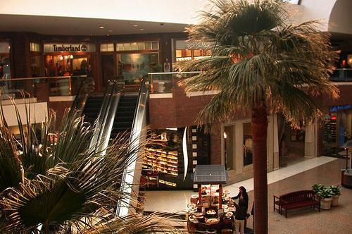

with tempfile.NamedTemporaryFile() as f:
s = 'There is nothing\nbut\nprogress\nto eat'
save_txt(s, f.name)
s_ = open_txt(f.name)
equals(s, s_)
#Test append
save_txt('\nnew', f.name, append=True)
s_ = open_txt(f.name)
equals(s+'\nnew', s_)Utils
Utility functions.
save_txt
save_txt (s, path, append=False)
open_txt
open_txt (path)
open_json
open_json (path)
save_json
save_json (d, path)
with tempfile.NamedTemporaryFile() as f:
d = {'pita': 'bread', 42: ['elden', 'ring']}
save_json(d, f.name)
d_ = open_json(f.name)
equals(d, d_)save_pickle
save_pickle (o, path)
open_pickle
open_pickle (path)
with tempfile.NamedTemporaryFile() as f:
s = ['There is nothing', 'but progress', 'to eat']
save_pickle(s, f.name)
s_ = open_pickle(f.name)
equals(s, s_)save_dill
save_dill (o, path)
open_dill
open_dill (path)
with tempfile.NamedTemporaryFile() as f:
s = ['There is nothing', 'but progress', 'to eat']
save_dill(s, f.name)
s_ = open_dill(f.name)
equals(s, s_)mkdir
mkdir (path, exist_ok=False, parents=False, overwrite=False, tmp=False, **kwargs)
Creates and returns a directory defined by path, optionally removing previous existing directory if overwrite is True
with tempfile.TemporaryDirectory() as d:
path = Path(os.path.join(d, 'new_dir'))
new_dir = mkdir(path)
assert new_dir.exists()
test_eq(new_dir, path)
# test overwrite
with open(new_dir/'test.txt', 'w') as f: f.writelines('test')
test_eq(len(list(walk(new_dir))), 1) # assert file is present
new_dir = mkdir(new_dir, overwrite=True)
test_eq(len(list(walk(new_dir))), 0) # assert file was deletedextract_files
extract_files (files, extract_to_dir, show_pbar=True)
open_image
open_image (path, gray=False, ignore_exif=True)
Open an image from disk path as a PIL Image
image = open_image(pv.test.SEG_IMAGE)
image
open_mask
open_mask (path, gray=True, ignore_exif=True)
open_mask(pv.test.SEG_MASK)save_image
save_image (image, path)
with tempfile.TemporaryDirectory() as d:
path = Path(d)/'test.png'
save_image(image, path)
image_ = open_image(path)
test_eq(np.array(image), np.array(image_))get_files
get_files (path, extensions=None, recurse=True, folders=None, followlinks=True)
Get all the files in path with optional extensions, optionally with recurse, only in folders, if specified. COPIED FROM https://github.com/fastai/fastai/blob/master/nbs/05_data.transforms.ipynb
test_eq(len(get_files(pv.test.ROOT_DIR/'segmentation', extensions='.png')), 2)ImageFile
ImageFile (x=None, *args, **kwargs)
*Path subclass for non-Windows systems.
On a POSIX system, instantiating a Path should return this object.*
image_file = ImageFile(str(pv.test.SEG_IMAGE))
assert isinstance(image_file.parent/'test', ImageFile)
str(image_file.parent/'test')'/home/lgvaz/git/polvo/assets/segmentation/test'ImageFile(str(pv.test.SEG_IMAGE)).open()
get_image_files
get_image_files (path, recurse=True, folders=None)
Get image files in path recursively, only in folders, if specified. COPIED FROM https://github.com/fastai/fastai/blob/master/nbs/05_data.transforms.ipynb
test_eq(len(get_image_files(pv.test.ROOT_DIR/'segmentation')), 2)glob_match
glob_match (dirpath, matches:Sequence[str], recursive=True)
glob_match(pv.test.ROOT_DIR, ['*.png'])[Path('/home/lgvaz/git/polvo/assets/polvo.png'),
Path('/home/lgvaz/git/polvo/assets/segmentation/mask1.png'),
Path('/home/lgvaz/git/polvo/assets/segmentation/image1.png')]glob_match(pv.test.ROOT_DIR, ['*.png'], recursive=False)[Path('/home/lgvaz/git/polvo/assets/polvo.png')]RenderDict
RenderDict (json_data)
From https://www.reddit.com/r/IPython/comments/34t4m7/lpt_print_json_in_collapsible_format_in_ipython/
RenderDict({'h1': {'h2.1': [1, 2, 3, 4], 'h2.2': 'a'}})